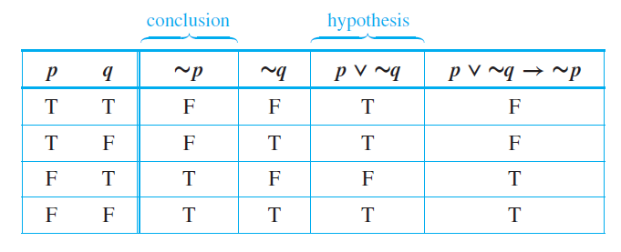
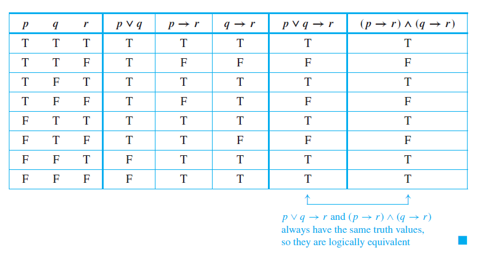
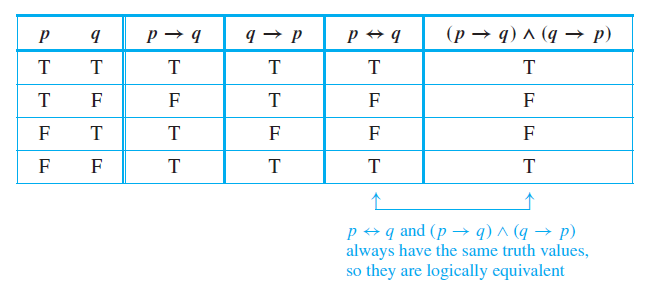

Lesson Objectives
- Recognize conditional statements and its formats.
- Determine the logical equivalences between conditional statements.
- Differentiate the formats of conditional statements.
- Evaluate expressions involving conditionals.
Evaluating Conditional Statements
Conditional Statements
When you make a logical inference or deduction, you reason from a hypothesis to a conclusion. Your aim is to be able to say, “If such and such is known, then something or other must be the case.”
If p and q are statement variables, the conditional of $$q$$ by $$p$$ is “If $$p$$ then $$q$$” or “$$p$$ implies $$q$$” and is denoted $$p \rightarrow q$$. It is false when $$p$$ is true and $$q$$ is false; otherwise it is true. We call $$p$$ the hypothesis (or antecedent) of the conditional and $$q$$ the conclusion (or consequent).
Things to note:
- A conditional statement that is true by virtue of the fact that its hypothesis is false if often called vacuously true or true by default.
- In the expression that include $$\rightarrow$$ as well as other logical operators such as $$\wedge$$, $$\vee$$, and $$\sim$$, the order of operation is that $$\rightarrow$$ is performed last.

Imagine that you are trying to solve a problem involving three statements: p, q, and r . Suppose you know that the truth of r follows from the truth of p and also that the truth of r follows from the truth of q. Then no matter whether p or q is the case, the truth of r must follow. The division-into-cases method of analysis is based on this idea. See the next example.

Representation of If-Then as Or
The statement "If p then q" is equivalent to "not p or q". Symbolically, $$p →q ≡ ∼p ∨ q$$.
The logical equivalence of “if p then q” and “not p or q” is occasionally used in everyday speech. Here is one instance.
Let $$\sim p$$ be "you study for the test" and $$q$$ be "you fail".
Then the given form is $$∼p ∨ q$$.
Also $$p$$ is $$\sim(\sim p)$$ which is "you do not study for the test".
So the equivalent if-then version, $$p →q$$, is
"If you do not study for the test, then you fail.
Negation of Conditional Statements
By definition, p →q is false if, and only if, its hypothesis, p, is true and its conclusion,
q, is false. It follows that the negation of “if p then q” is logically equivalent to “p and not
q.”
This can be restated symbolically as follows:
$$∼(p →q) ≡ p ∧ ∼q$$
You can also obtain this result by starting from the logical equivalence $$p →q ≡ ∼p ∨ q$$.
Take the negation of both sides to obtain
$$∼(p →q) ≡ ∼(∼p ∨ q)$$, which is equivalent to $$∼(∼p) ∧ (∼q)$$ by De Morgan’s laws, which is equivalent
to
$$p ∧ ∼q$$ by the double negation law.
(1) My car is in the repair shop and I can get to class.
(2) Sara lives in Athens and she does not live in Greece. (Sara might live in Athens,
Georgia; Athens, Ohio; or Athens, Wisconsin.)
Note: NEVER write the negation of an if-then statement as another if-then statement!
Converse, Inverse, and Contrapositive
Suppose a conditional statement of the form “If p then q” is given
1. The contrapositive is "If ∼q then ∼p"
2. The converse is “If q then p”
3. The inverse is “If ∼p then ∼q”
Symbolically,
The contrapositive of $$p →q$$ is $$∼q →∼p$$.
The converse of $$p →q$$ is $$q → p$$,
and the inverse of $$p →q$$ is $$∼p →∼q$$.
Things to note:
- A conditional statement is logically equivalent to its contrapositive.
- A conditional statement and its converse are not logically equivalent.
- A conditional statement and its inverse are not logically equivalent.
- The converse and the inverse of a conditional statement are logically equivalent to each other.
Converse: If Howard can swim to the island, then Howard can swim across the lake.
Inverse: If Howard cannot swim across the lake, then Howard cannot swim to the island.
Contrapositive: If Howard cannot swim to the island, then Howard cannot swim across the lake.
Biconditionals
The following expression can be rewritten in two ways: "John will break the world’s record for the mile run only if he runs the mile in under four minutes."
- If John breaks the world’s record, then he will have run the mile in under four minutes. (Implication)
- If John does not run the mile in under four minutes, then he will not break the world’s record. (Contrapositive)
This is where the concept of biconditionals come in.
Given statement variables p and q, the biconditional of p and q is “p if, and only if, q” and is denoted $$p ↔ q$$. It is true if both p and q have the same truth values and is false if p and q have opposite truth values. The words if and only if are sometimes abbreviated iff.
In order of operations, $$↔$$ is coequal with $$→$$. As with $$∧$$ and $$∨$$, the only way to indicate precedence between them is to use parentheses. The full hierarchy of operations for the five logical operators seen below.
- Evaluate negations $$∼$$ first.
- Evaluate $$∧$$ and $$∨$$ second. When both are present, parentheses may be needed.
- Evaluate $$→$$ and $$↔$$ third. When both are present, parentheses may be needed.

If this program is correct, then it produces the correct answes for all possible sets of input data; and if this program produces the correct answers for all possible sets of input data, then it is correct.
Questions or clarifications on this topic? Click here to place your feedback. Your messgages will be highly appreciated.